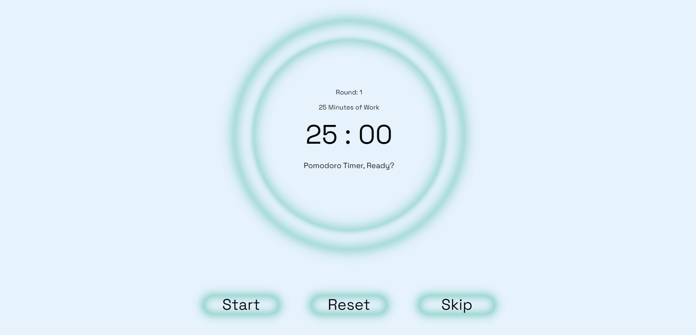
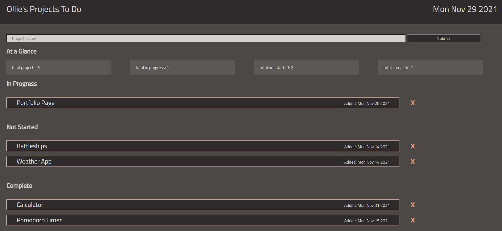
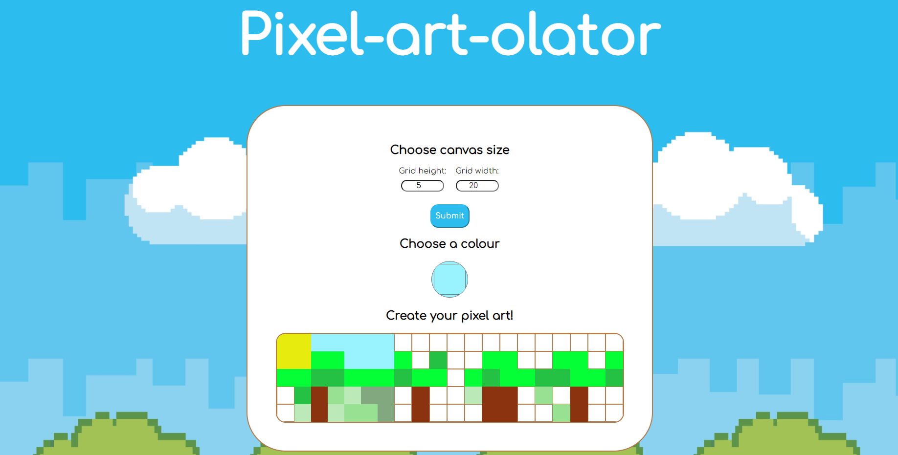

Hi, welcome to my portfolio
Nature-inspired, bespoke web design
Ollie Hermans
Hi, my name is Ollie. My web development journey started recently when I decided it was time to take the plunge and switch to a career I could be more passionate about. I specialize in HTML, CSS and JavaScript with further specialization to come.
My background as a business consultant for large organizations in the UK, NZ and Aus gives me a point of difference from other developers as I've spent years on the planning side. I also feel like I can safely say my bachelor degree in Forestry Science isn't something most developers have!
Aside from building things on the web, I enjoy getting out in nature, diving and gardening. You can check out my gardening Instagram here.
If you are wanting a webpage with a bit of a natural spin (and a developer who is easy to work with) - flick me a message (email link at the top right of the page).
Hi, my name is Ollie. My web development journey started recently when I decided it was time to take the plunge and switch to a career I could be more passionate about. I specialize in HTML, CSS and JavaScript with further specialization to come.
My background as a business consultant for large organizations in the UK, NZ and Aus gives me a point of difference from other developers as I've spent years on the planning side. I also feel like I can safely say my bachelor degree in Forestry Science isn't something most developers have!
Aside from building things on the web, I enjoy getting out in nature, diving and gardening. You can check out my gardening Instagram here.
If you are wanting a webpage with a bit of a natural spin (and a developer who is easy to work with) - flick me a message (email link at the top right of the page).
A simple, yet fully functional calculator

A Pomodoro timer for boosting productivity, with a dog facts provided by an API as a reward

A project to do list with status counter, drag and drop, note taking, local storage and dynamic task creation

A fun pixel art creator with a dynamic adjustable canvas size and changeable colours
Scroll down to see my latest projects